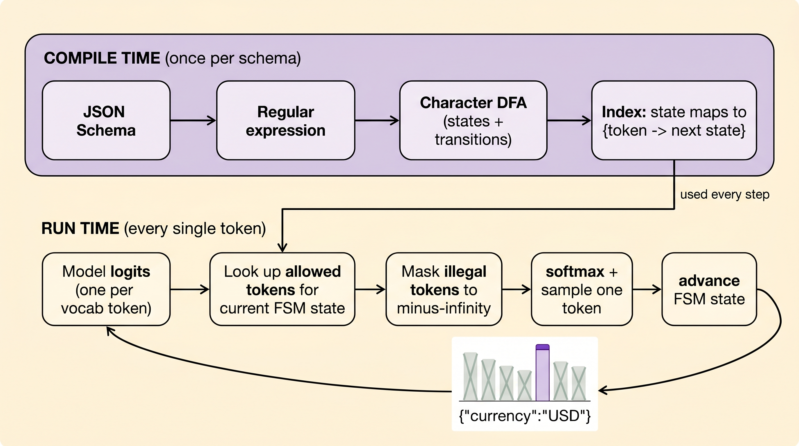
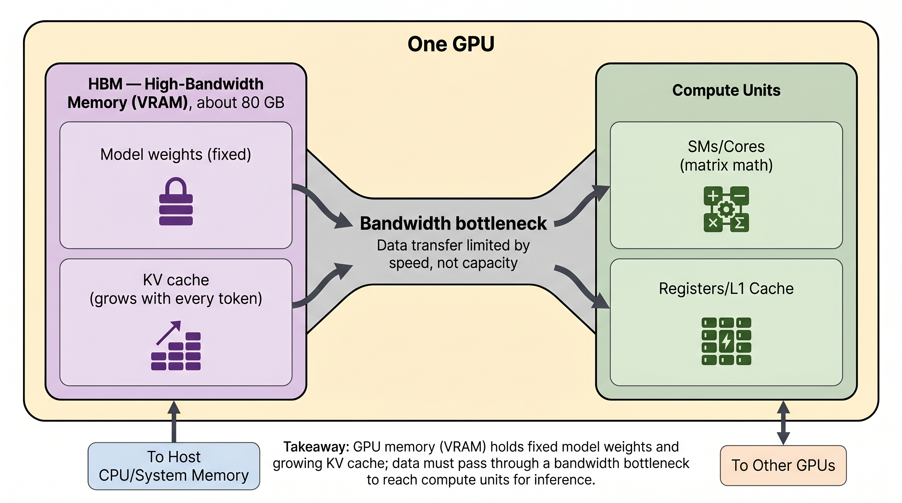
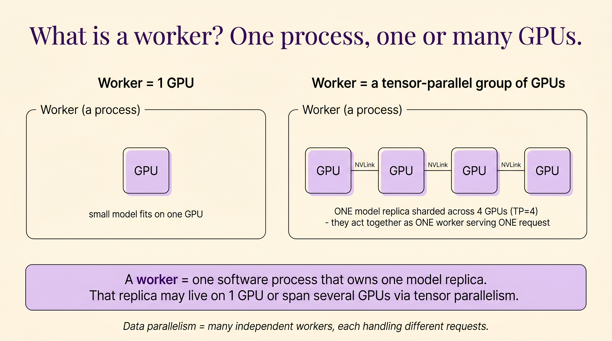
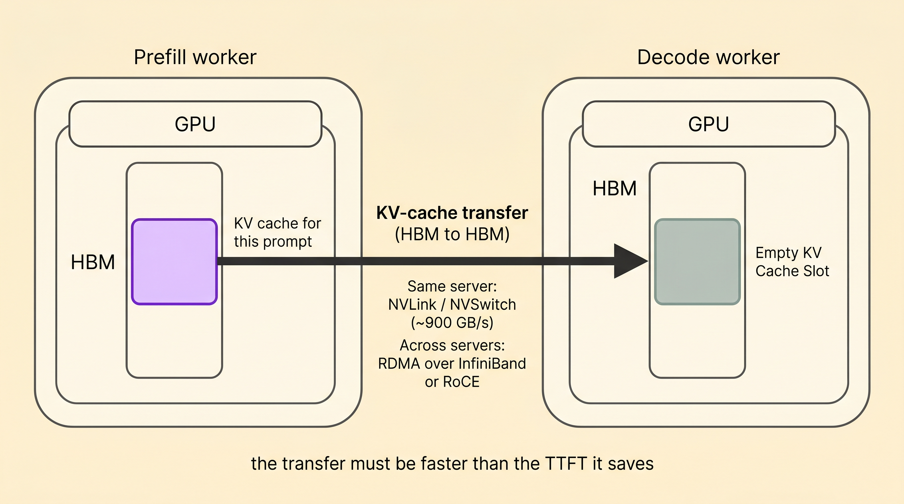
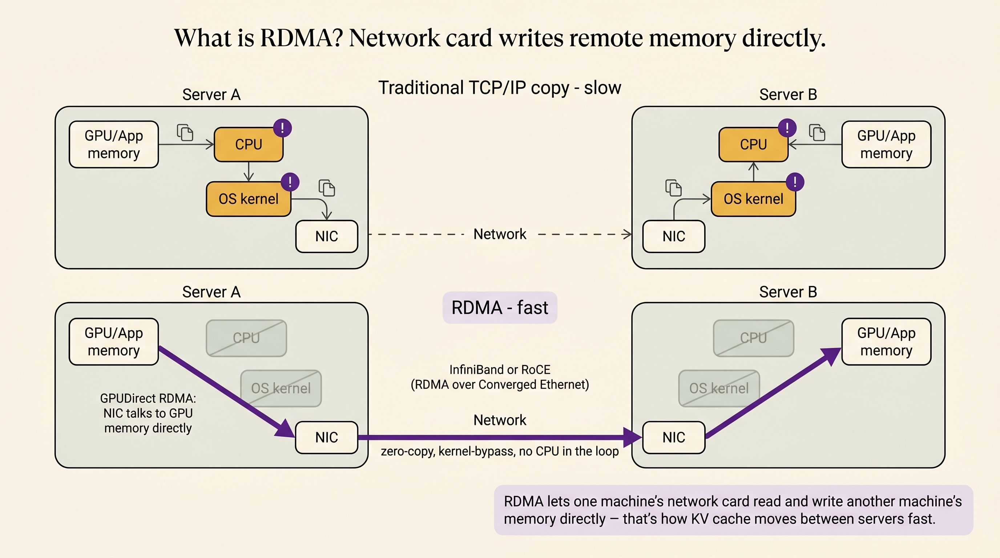
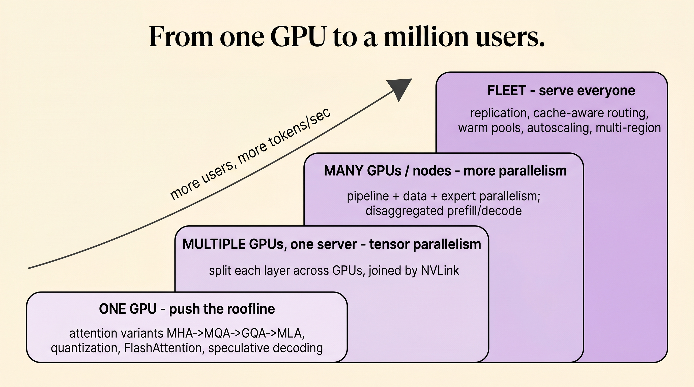
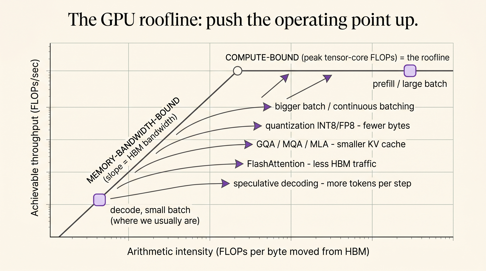
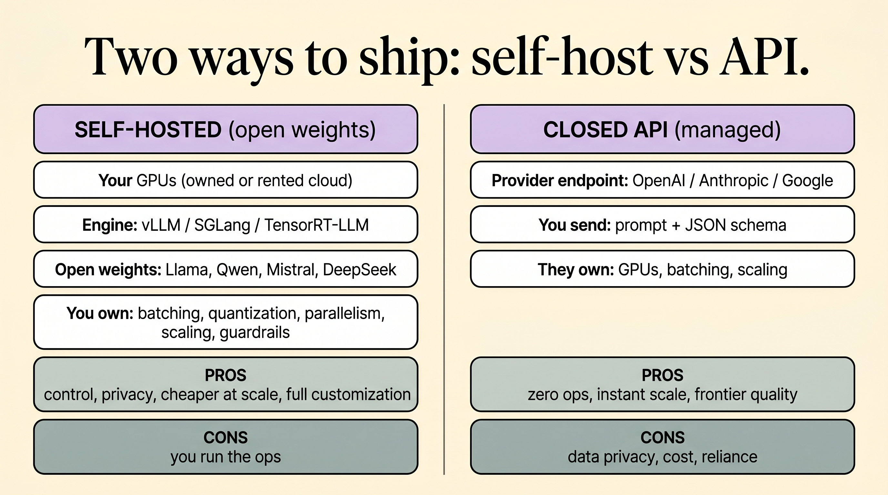
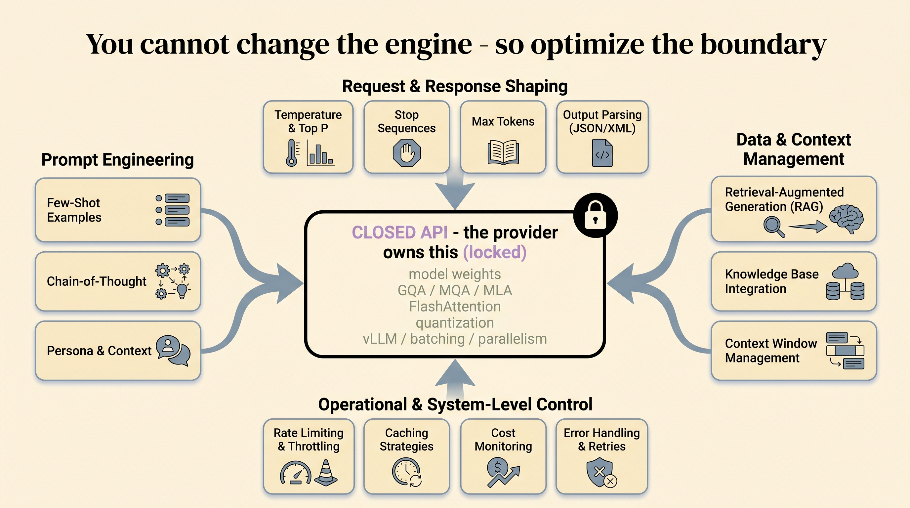

Don't just serve — steer.
A working model is the easy part. Turning it into a low-latency, high-throughput product means shaping its output, measuring it honestly, and keeping the GPUs warm. We'll build the whole picture from one running example.
One sentence becomes a guided journey
Everything below is anchored to a single concrete product: an ERP chatbot that lets a user create a purchase order by talking to it instead of clicking through twelve screens.

Notice what the product actually demands. It is not “produce some helpful text.” It is:
- render a form with exactly these fields, in a shape the UI can bind to;
- then emit “here's what you do next” steps, in order, every time;
- and do it fast enough that the chat feels alive.
So our job splits cleanly into three pressures, and the tutorial follows them in order: shape the output (§1), measure that you did (§2), and serve it fast and keep it up (§3–§4). §5 ties the whole stack together.
Underneath, we've already implemented the parallelism that gets tokens out the door — data parallelism (DP) to handle many users at once and tensor parallelism (TP) to split a layer across GPUs. Those buy throughput. They do nothing to guarantee the output is a valid purchase-order form. That guarantee is a separate engineering problem — and it's where we start.
Forcing the model to emit valid structure
A free-running LLM samples the next token from a probability distribution over the whole vocabulary. Left alone, it will occasionally produce "quantitiy": 200,, — and your UI breaks. Steering means making invalid tokens impossible, not merely unlikely.

There are three techniques worth teaching, from softest to hardest guarantee.
Logit biasing
Add or subtract a constant from specific tokens' logits before sampling. Push "USD", "EUR", "INR" up and everything else down when you're decoding the currency field; ban the <newline> token mid-value. Cheap, blunt, and it only nudges probabilities — it can't guarantee validity on its own.
Grammar / guided decoding
Compile a formal grammar (a regex or context-free grammar) into a finite-state machine. At each step the FSM says which tokens are even reachable; the rest are masked to −∞. After "qty": only digit tokens survive. This is what forces well-formed structure.
JSON-schema decoding
The everyday version of guided decoding: hand the engine a JSON Schema for the purchase order and it constrains generation to emit exactly that object — right keys, right types, required fields present. vLLM, Outlines, and XGrammar all do this. Your form contract becomes the decoding constraint.
What it looks like in practice
The schema is the form. You write it once and it does double duty: it documents the contract and it drives the decoder.
# The purchase-order contract — also the decoding constraint po_schema = { "type": "object", "properties": { "supplier": {"type": "string"}, "item": {"type": "string"}, "quantity": {"type": "integer", "minimum": 1}, "currency": {"enum": ["USD", "EUR", "INR"]}, # enum ⇒ only 3 legal continuations "delivery_date": {"type": "string", "format": "date"} }, "required": ["supplier", "item", "quantity"], "additionalProperties": False } # vLLM: pass the schema as a guided-decoding constraint out = llm.generate(prompt, guided_decoding=GuidedDecodingParams(json=po_schema)) # 'out' is now guaranteed to parse as a PO object. No try/except JSON soup.
Constrained decoding isn't free: the FSM must compute a token mask at every step, which can add latency, and an over-tight grammar can force the model into a bad-but-valid answer (it will happily emit "quantity": 1 just to stay legal). Rule of thumb: constrain the structure, not the judgement. Force the shape of the form; let the model choose the values — then catch bad values with evals (§2) and guardrails (§4).
How the FSM actually guarantees valid JSON
The line guided_decoding=GuidedDecodingParams(json=po_schema) hides a small state machine sitting between the model's logits and the sampler. Here is exactly what it does — three stages, two at compile time and one that runs on every token.

Stage 1–2 · Schema becomes a state machine
The schema is compiled into a regular expression that matches exactly the legal strings, then into a deterministic finite automaton (DFA) over characters:
# po_schema compiles to this regex (whitespace omitted):
\{"supplier":"[^"]*","item":"[^"]*","quantity":[1-9][0-9]*(,"currency":"(USD|EUR|INR)")?(,"delivery_date":"[0-9]{4}-[0-9]{2}-[0-9]{2}")?\}
Two guarantees already fall out, before any model runs: [1-9] for the first quantity digit makes minimum:1 structural (a leading 0 is literally unwriteable), and item sits between supplier and quantity with no skip-path — so the chat's {"supplier":"Acme","quantity":200} (which drops the required item) is not in the language. The FSM won't let the model close the brace until item exists.
Stage 3 · The index (the clever bit)
The DFA is over characters, but the model emits multi-character tokens. So we precompute, once, for every FSM state: walk each vocabulary token's characters through the DFA and keep it only if the whole walk stays alive. The result is a dictionary state → {legal token → next state}. Run time is then just a lookup — no re-parsing the string.
Stage 4 · Masking the logits (with real numbers)
Say we're at the state that expects the currency value, and the model's raw favourite token is Acme (a string fragment — illegal here). The index says only {USD, EUR, INR, US} are legal. Masking sets every other logit to −∞:
| Token | Raw logit | After mask | exp() | Probability |
|---|---|---|---|---|
| Acme | 4.0 (highest!) | −∞ | 0 | 0.000 |
| 200 | 2.5 | −∞ | 0 | 0.000 |
| USD | 3.0 | 3.0 | 20.09 | 0.631 |
| US | 2.0 | 2.0 | 7.39 | 0.232 |
| EUR | 1.0 | 1.0 | 2.72 | 0.085 |
| INR | 0.5 | 0.5 | 1.65 | 0.052 |
The token the model most wanted (Acme, logit 4.0) now has probability exactly 0. Mass is renormalized over the legal four; the model picks USD and the FSM advances. The probability of invalid JSON isn't small — it's zero.
The enum collapse, and why tokenization doesn't matter
If the model samples US instead of the whole USD, the FSM moves to a mid-word state where the only legal token in the entire vocabulary is D. Both tokenizations land in the same place:
path A: ENUM0 --USD--> e_USD --"--> done # one token path B: ENUM0 --US--> e_US --D--> e_USD --"--> done # two tokens
Because the grammar runs on characters, it's indifferent to how the tokenizer chopped the word — and a single merged token like "," (close-quote + comma + open-quote) can cross a structural boundary cleanly. That's why multi-character and boundary-crossing tokens "just work."
It's a proven invariant. Every legal token keeps the FSM in a live state (dead states were pruned at compile time, so an accept state is always still reachable), and <EOS> is legal only in an accept state. So the model can never stop mid-value or with an unclosed brace, and whenever it legally ends, the string is in the schema's language. ∎
The real backends vLLM plugs in
| Backend | Automaton | Key idea |
|---|---|---|
| Outlines | regex → DFA | Precompute the state → {token → next} index so each step is an O(1) lookup. The paper (Willard & Louf 2023) that made this practical. |
| XGrammar | CFG → pushdown | Splits context-independent vs context-dependent tokens, caches an adaptive mask, and overlaps mask-building with the GPU forward pass (≈ zero overhead). Handles nested JSON; often vLLM's default. |
| lm-format-enforcer | token-prefix filter | Walks the allowed-token tree with some whitespace/format slack — less rigid than a pure DFA. |
A full matrix-level walkthrough (toy 31-token vocabulary, complete DFA, the whole token-by-token trace) lives in constrained-json-decoding-detailed-walkthrough.md alongside this site's source.
Nothing works without an eval harness
You cannot improve what you can't measure, and “it looked right when I tried it” is not measurement. Before deployment you need a ground-truth dataset from the team you're building for and an automated harness that scores the model against it — at the field level.

Three datasets, three jobs
Golden set
Small, human-reviewed examples that represent the product's contract. “Create a PO for 200 steel bolts from Acme, deliver June 30” → the exact expected JSON. This is where exact field-level checks belong. Curated by the ERP team, not invented by you.
Synthetic edge set
Generated adversarial variants: missing fields, weird dates (“next Tuesday”, “30 Feb”), long contexts, multilingual text, malformed tables pasted from email. These are the inputs handcrafted tests forget — so you generate them on purpose.
Production replay
Anonymized traffic samples replayed through new model versions. This is the only set that catches distribution drift — the way real users phrase requests slowly diverges from anything you imagined. Grows itself over time.
What “field-level check” actually means
A single pass/fail on the whole blob hides everything. Score each field, then aggregate. For our PO:
| Field | Expected | Model output | Check | Result |
|---|---|---|---|---|
| supplier | Acme Steel | Acme Steel | exact / normalized | ✅ pass |
| item | steel bolts | steel bolts | exact | ✅ pass |
| quantity | 200 | 200 | numeric equal | ✅ pass |
| delivery_date | 2026-06-30 | 2026-06-03 | ISO date equal | ❌ fail |
| currency | USD | USD | enum | ✅ pass |
That one failing row — a date the model misparsed — is invisible in a holistic score but obvious here, and it tells you exactly what to fix. A useful harness reports: schema-valid % (did it even parse?), per-field accuracy, and full-record exact-match %.
# The harness is boring on purpose — boring is auditable def score(example, model_out): valid = matches_schema(model_out, po_schema) # did it parse at all? fields = {k: (model_out.get(k) == example.expected[k]) for k in example.expected} # field-by-field return {"schema_valid": valid, "fields": fields, "exact_match": valid and all(fields.values())} # Run it on every dataset, gate deploys on the aggregate (see §4 canary) report = run_harness(model, golden + synthetic_edges + prod_replay) assert report.schema_valid_pct > 0.99 # structure is non-negotiable assert report.field_acc["delivery_date"] > 0.95
The harness is what makes every later decision safe. Canary promotion (§4) is just “did the eval score hold on live traffic?” A new quantization (§5) is only allowed if the harness says field accuracy didn't drop. Without it, every change is a guess.
Know where the milliseconds go
For a chatbot, two numbers decide whether it feels alive: time to first token (TTFT) — how long until something appears — and inter-token latency (TPOT) — how smoothly the rest streams. You profile to learn which one you're bleeding on.

The two phases have opposite bottlenecks
| Phase | What happens | Bound by | What helps |
|---|---|---|---|
| Prefill | All prompt tokens processed in parallel → KV cache + first token | Compute (FLOPs) | Tensor parallelism, FlashAttention, fewer prompt tokens, prefix-cache reuse (§4) |
| Decode | One token per step, re-reading the whole KV cache each time | Memory bandwidth | Bigger batches (amortize weight reads), quantization, speculative decoding, GQA/MQA/MLA (§5) |
Our existing DP and TP map onto this directly:
Data parallelism (DP)
Full model replicated N times; each replica serves different requests. More replicas → more concurrent users → higher throughput. Doesn't speed up a single request.
Tensor parallelism (TP)
One layer's matrices split across GPUs that work on the same request together. Shrinks per-token latency and lets a model too big for one GPU fit — at the cost of inter-GPU communication every layer.
Measure TTFT and TPOT separately under realistic concurrency. If TTFT is your pain, attack prefill — cache the shared system-prompt prefix, trim the prompt, add TP. If TPOT is your pain, attack decode — raise batch size, quantize, add speculative decoding. The fixes live in different layers, so the diagnosis has to come first.
The model still isn't ready
It generates valid forms, it passes the harness, you've profiled it. It is still not production. Five concerns stand between a good model and a good service: cold starts, canary deploys, cache-aware routing, batch vs online, and guardrails.
Cold starts & keeping things warm

Assume our serving config is vLLM with DP=2 × TP=2 — four GPUs, two replicas, each replica sharded across two cards. A cold request to a freshly scheduled pod walks the whole staircase:
- Pod / container schedulingKubernetes finds a node with 2 free GPUs.
- Load weights from disk → GPUTens of GB copied into VRAM. The dominant cost — often tens of seconds.
- Allocate the paged KV-cache poolvLLM reserves GPU memory blocks for attention state.
- CUDA-graph capture / warm-up passFirst few kernels are slow until graphs are captured and caches primed.
- First tokenOnly now does the user get a reply.
The fix is to never let the user hit a cold worker:
- Keep a warm pool. Hold N replicas already loaded and pinned in GPU memory, weights resident, KV pool allocated, CUDA graphs captured.
- Set
min_replicas ≥ 1(never scale to zero) for interactive traffic; scale-to-zero is for batch jobs that can wait. - Keep-alive pings. A periodic synthetic request stops the OS/GPU from paging things out and keeps caches hot.
- Snapshot / fast-load weights (safetensors mmap, model caching on the node) so a new replica warms in seconds, not minutes.
- Pre-scale ahead of demand — spin up replicas before the morning traffic wave, not after latency already spiked.
Canary deployments
Where the name comes from. Coal miners carried a canary in a cage underground. The bird is more sensitive to toxic gas than humans — if it stopped singing, you evacuated before the gas reached you. A canary deployment is the same idea: expose a tiny, sacrificial slice of real traffic to the new model and watch it closely, so a bad release hurts 5% of requests instead of 100%.

This is exactly where §2's harness pays off: the canary's gate isn't vibes, it's “did the eval metrics hold on real traffic?” A typical ramp: 1% → 5% → 25% → 100%, pausing at each step to confirm the gate stays green.
Cache-aware routing

In our chatbot, the first ~1–2k tokens of every request are identical: the system prompt, the PO tool schema, the few-shot examples. Recomputing that prefix for every message is pure waste. Two complementary moves:
- Prefix / KV caching (automatic in vLLM): the engine stores the KV cache for a prefix and reuses it for any request that shares it — slashing prefill cost and TTFT.
- Cache-aware routing: a naïve round-robin load balancer scatters requests randomly and destroys cache locality. A prefix-aware router instead sends requests with the same prefix to the same replica, turning misses into hits. The same logic applies to session affinity — keep one user's multi-turn conversation pinned to the worker that already has their history cached.
Batch vs online inference

| Online / interactive | Batch / offline | |
|---|---|---|
| Example | The live PO chatbot | Nightly: classify 1M historical POs, bulk-extract fields from a year of invoices |
| Optimize for | Low latency, low TTFT | $ / token, GPU utilization |
| Batch size | Small, formed on the fly (continuous batching merges live requests token-by-token) | Huge — pack the GPU to the brim |
| Latency target | Milliseconds matter | Doesn't matter; throughput is king |
| Scaling | Warm pool, min_replicas ≥ 1 | Scale-to-zero between jobs is fine |
The lesson for students: the same weights serve both, but the serving configuration is completely different. Don't run your nightly bulk job on the latency-tuned online fleet, and don't make interactive users wait behind a giant batch.
Guardrails & output filtering

Decoding (§1) guarantees the JSON parses. It does not guarantee the values make business sense. Guardrails are the second wall:
Schema validator
Belt-and-suspenders re-check that the object matches po_schema even if decoding was unconstrained for some path.
Safety / PII filter
Strip or block leaked secrets, PII, prompt-injection echoes, or unsafe content before it's shown or stored.
Business-rule check
Is the supplier on the approved vendor list? Is the price within budget? Is the delivery date in the future? Rules the model can't be trusted to enforce.
Repair / re-ask loop
On failure, don't crash — feed the violation back (“price exceeds budget, ask the user to confirm”) and regenerate. Graceful degradation beats a broken form.
Stop making prefill and decode fight
Recall from §3 that a request has two phases with opposite bottlenecks: prefill is compute-bound and bursty, decode is memory-bandwidth-bound and steady. When they share the same GPU, they sabotage each other. Disaggregated inference splits them onto separate pools.

Why colocating them hurts
With plain continuous batching (vLLM's scheduler, §4), live prefills and decodes are merged into the same GPU step. A long prompt — our ERP system prompt + tool schema + the user's pasted email is easily 1–2k tokens — triggers a heavy prefill that monopolizes the GPU for a beat. Every other user's token stream stalls behind it. The symptom is the one users hate most: jittery, stuttering output and spiky tail latency, even when average throughput looks fine.
The disaggregated design
- Prefill poolGPUs tuned for throughput on big parallel matmuls. They ingest the prompt, build the KV cache, emit the first token (this is your TTFT), then hand off.
- KV-cache transferThe prompt's KV cache is moved to a decode worker over NVLink / NVLink-Switch / RDMA. The transfer must be fast enough that the handoff doesn't eat the latency you just saved.
- Decode poolGPUs tuned for memory bandwidth and large decode batches. They own the token-by-token stream (your TPOT) without any prefill ever barging in.
Wait — what exactly is a “worker”?
Good question, and the word is genuinely overloaded. Let's build it up from the silicon, because "pool", "worker", and "GPU" are not the same thing.
1 · First, what's inside one GPU
A single GPU is two things bolted together: a slab of HBM (High-Bandwidth Memory, ~80 GB of VRAM) and a grid of compute cores (SMs / tensor cores). Your model weights and the growing KV cache both live in HBM; the math happens in the SMs. The fat pipe between them — memory bandwidth, ~3 TB/s — is the thing decode is bottlenecked on (§3).

2 · A worker is a process, not a GPU
Here's the key idea that resolves the confusion: a worker is one software process that owns exactly one model replica. That replica might fit on one GPU — then the worker is one GPU. Or the model might be too big, so it's sharded with tensor parallelism across several GPUs — then a single worker drives, say, 4 GPUs that are wired together with NVLink and act as one unit on one request. So:
- Worker = 1 GPU when the replica fits on one card.
- Worker = N GPUs (a TP group) when one replica is split across cards — they collaborate on the same request, exchanging activations over NVLink every layer.
- Many workers = data parallelism — independent replicas, each handling different requests. That's how you scale throughput.
A pool (prefill pool, decode pool) is then just "a set of workers all doing the same job." A prefill worker can itself be 1 GPU or a TP group; same for decode.

3 · How the KV cache actually moves
When a prefill worker finishes, the prompt's KV cache is sitting in its GPU's HBM. The decode worker needs that exact data in its GPU's HBM. So the transfer is fundamentally a memory-to-memory copy between two GPUs' HBM. Two cases:
- Same server — the two GPUs are in one box, connected by NVLink / NVSwitch (~900 GB/s). The copy is a direct GPU-to-GPU transfer, very fast.
- Different servers — the GPUs are in different machines, so the data crosses the network. That's where RDMA comes in (next).

4 · What RDMA is
RDMA = Remote Direct Memory Access. Normally, sending data between machines means copying it up through the CPU and the OS kernel's networking stack on both ends — several copies, lots of CPU involvement, latency. RDMA lets one machine's network card (NIC) read and write another machine's memory directly, bypassing the CPU and the kernel entirely (zero-copy, kernel-bypass). With GPUDirect RDMA, the NIC even talks straight to GPU memory, so the KV cache goes GPU → NIC → network → NIC → GPU with no CPU in the loop. It runs over InfiniBand or RoCE (RDMA over Converged Ethernet). This is what makes cross-server KV transfer fast enough to be worth it.

GPU = one chip (HBM + compute). Worker = one process owning one model replica, which is 1 GPU or a TP group of GPUs. Pool = many workers doing the same job (all prefill, or all decode). KV transfer = copying the prompt's cache from a prefill worker's HBM into a decode worker's HBM — over NVLink within a server, or RDMA across servers.
Scale each pool on its own SLO
Long prompts, short answers (summarize an invoice) → add prefill GPUs. Short prompts, long answers (draft a vendor email) → add decode GPUs. No more one-size compromise.
TTFT and TPOT stop trading off
A burst of heavy prefills can't stutter anyone's stream, because decode lives on different silicon. You hit both latency SLOs at once.
Tune hardware per phase
You can even use different GPU types or parallelism configs — e.g. heavier TP on prefill, bigger batches on decode — since the phases no longer share a worker.
Disaggregation shines at scale and with skewed prompt/output lengths — exactly the ERP case, where prompts are long (system prompt + tables) but the structured form is short. It's the architecture behind systems like DistServe and Mooncake, and is increasingly a first-class mode in vLLM. The cost is real: you now operate two pools and a fast KV-transfer path. For a small single-node deployment, plain colocated continuous batching is simpler and fine — reach for disaggregation when prefill–decode interference actually shows up in your tail-latency numbers (which is why you profiled in §3).
Design a low-latency, high-throughput LLM inference system
This is the system-design question for an inference engineer, and the way to nail it in an interview is to refuse to answer it as one blob. Walk up a ladder: how fast on one GPU → how to add more GPUs → the full menu of tricks → how to deploy it → what to measure. Narrate where each piece comes from and the whole course snaps together.
Before you draw a single box, scope it. Five questions decide everything below: 1) What's the workload? (interactive chat vs nightly batch) · 2) What are the SLOs? (TTFT, tokens/sec, P99 — the “five numbers” from Ch 2) · 3) How big is the model — does it fit on one GPU? · 4) Open weights or a closed API? · 5) How much traffic, how bursty? We answer them for our ERP purchase-order chatbot as we climb.

Keep one picture in your head the whole climb: the three layers — runtime, tooling, infra — from Ch 1: The Three Layers. Every trick below lives in exactly one of them.

Layer 1 · How fast can we go on one GPU?
Always start here — never reach for more hardware before one GPU is saturated. The north star is the roofline (Ch 3: The Roofline Is Our North Star): every kernel is either compute-bound (limited by tensor-core FLOPs) or memory-bandwidth-bound (limited by how fast bytes move out of HBM — the GPU anatomy from Ch 6: The Machine). For LLMs, prefill is compute-bound and decode is memory-bound (Ch 7: The Good and Evil of the KV Cache). So the entire one-GPU game is: move fewer bytes per token, or do more math per byte — pushing the operating point up to the roofline.

Here are the one-GPU knobs, each tagged with where we covered it and what it buys the ERP chatbot. They all attack the same enemy — decode is memory-bandwidth-bound — by moving fewer bytes or doing more math per byte:
Attention variants: MHA → MQA → GQA → MLA
The KV cache is the bandwidth hog. Multi-Query and Grouped-Query attention let many query heads share a few key/value heads — shrinking KV dramatically; MLA compresses KV into a low-rank latent. For the ERP bot's long system prompt, a smaller KV means bigger batches and more tokens/sec from the same card.
KV compression & SSMs (Mamba)
Shrink the cache along the sequence: sliding-window attention, KV eviction, summarization. Or drop attention entirely — state-space models (Mamba) keep a fixed-size recurrent state, so memory doesn't grow with that pasted email thread.
FlashAttention + online softmax
Fuse attention into one kernel that never materializes the full N×N score matrix, computing softmax online in a single streaming pass. Less HBM traffic, less memory, faster prefill — the win that shortens TTFT on long prompts.
Quantization (INT8 / FP8 / INT4)
Serve weights (and sometimes KV / activations) in fewer bits than FP16 — GPTQ, AWQ, GGUF, QAT. Fewer bytes per token directly attacks the decode bottleneck and fits the model on fewer GPUs. Always gate a new quantization on the §2 eval harness.
Speculative decoding
A small draft model proposes several tokens; the big model verifies them in one parallel pass. When the draft is right you get multiple tokens per step — a big TPOT win with identical output, so the ERP form streams faster for free.
PagedAttention, prefix cache, chunked prefill
Engine-level wins on one GPU: PagedAttention stores KV in pages (no fragmentation → more concurrent users), prefix caching reuses the shared system-prompt KV, and chunked prefill interleaves a long prompt with ongoing decodes so it doesn't stall the stream.
Layer 2 · What if one GPU isn't enough? — parallelism
You move to multiple GPUs for two distinct reasons: the model doesn't fit on one card, or one card can't keep up with traffic. These need different kinds of parallelism (Ch 16: Parallelism on the Roofline). Recall the worker idea from §5: a worker is one process owning one replica, which may span several GPUs.
Tensor parallelism (TP)
Split each layer's matrices across GPUs in one server, joined by NVLink. They work the same request together → lower per-token latency and the model fits. Costs an all-reduce every layer, so keep TP inside one NVLink domain.
Pipeline parallelism (PP)
Put different layers on different nodes; tokens flow through the pipeline. Spans models too big even for one server's GPUs; needs enough in-flight work to keep every stage busy.
Data parallelism (DP)
Replicate the whole model N times; each replica serves different requests. The straightforward throughput knob — more replicas, more concurrent ERP users.
Expert parallelism (EP)
For Mixture-of-Experts models, place different experts on different GPUs and route tokens to them. Scales sparse models without every GPU holding every expert.
Sequence / context parallelism
Split a very long sequence across GPUs so no single card holds the whole KV — what you reach for when an ERP user pastes a giant document.
Disaggregated prefill / decode
The big structural move from §5: prefill and decode on separate pools, KV shipped over NVLink/RDMA, so a heavy prefill never stutters anyone's stream. Scale each pool on its own SLO.
Climb in this order: fit + saturate one GPU → TP within a server → DP for more users → PP across servers only if the model demands it → disaggregate when prefill/decode interference shows up in your P99. Don't add a parallelism dimension until the simpler one is genuinely maxed — every extra dimension adds communication and ops cost.
Layer 3 · Pick the engine (the tooling layer)
The runtime and parallelism tricks are useless if the server schedules work badly. The inference engine turns raw GPU capability into served tokens. The reference default is vLLM (its core wins below; the request lifecycle is Ch 19: Anatomy of a vLLM Step), but it's one of several (Ch 20: The Engine Landscape):
PagedAttention
KV cache managed in pages like virtual memory — near-zero fragmentation, so far more concurrent sequences fit in the same VRAM.
Continuous batching
New requests join the running batch token-by-token instead of waiting for it to drain (Ch 14). Keeps the GPU saturated → high throughput without wrecking latency.
Prefix caching + guided decoding
Automatic prefix-cache reuse (§4) and built-in JSON-schema/grammar decoding (§1) — the engine implements the steering and caching we designed.
| Engine | Sweet spot | Reach for it when… |
|---|---|---|
| vLLM | General-purpose, open, fast-moving | your default for self-hosting open weights — great throughput, huge model coverage, guided decoding built in. |
| SGLang | Structured generation, RadixAttention | heavy structured output / agentic workloads with lots of shared prefixes (our ERP tool-schema prefix loves RadixAttention). |
| TensorRT-LLM | Squeeze every last ms on NVIDIA | you've fixed the model and want compiled, hardware-tuned kernels for the lowest latency. |
| TGI · LMDeploy · llama.cpp | HF stack · efficiency · on-device/CPU | tight HF integration, or running quantized models on small/edge/Apple-Silicon hardware. |
Layer 4 · Deployment — keep the fleet warm, safe, routed
An engine on a GPU is not a product. The infra layer from §4 is the operational reality around it (Ch 18: Replication, Routing, Multi-Region and Track 6: Production Inference Systems):
Warm pools & autoscaling
No cold starts for interactive traffic; pre-scale ahead of demand; scale-to-zero only for batch.
Canary deploys
Ship behind an eval-gated traffic split; promote or roll back automatically.
Cache-aware routing
Route by prefix and session so shared context is computed once and conversations stay cache-hot.
Batch vs online split
Separate fleets and configs for interactive vs bulk; never mix their latency goals.
Disaggregated prefill / decode
At scale, split the two phases onto separate pools (§5) so TTFT and TPOT stop trading off.
Guardrails & filtering
Validate, filter, enforce business rules, and repair before output reaches the user.
Evals & observability
The harness from §2 running continuously on replayed traffic — the gate every other infra decision leans on.
The fork every deployment hits: self-host or API?
Question 4 from the top — open weights or closed API? — splits the whole design in two. It's the single biggest architectural decision, so answer it explicitly in the interview.

You run it
Stack: your (or rented cloud) GPUs · an engine like vLLM / SGLang / TensorRT-LLM · open weights (Llama, Qwen, Mistral, DeepSeek). You own every knob in this section — batching, quantization, parallelism, disaggregation, warm pools, routing, guardrails.
Pick it for: data privacy (the PO data never leaves your walls), cost at high steady volume, deep customization (fine-tunes, custom quantization), and predictable latency. The price: you operate the whole thing — this entire tutorial is your job.
They run it
Stack: a provider endpoint (OpenAI, Anthropic, Google). You send a prompt + JSON schema; they own the GPUs, batching, scaling, and frontier model. Layers 1–4 are their problem.
Pick it for: zero ops, instant elastic scale, and best-in-class quality with no GPU to babysit — ideal early, or for bursty/low-volume traffic. The price: per-token cost that grows with usage, data leaving your perimeter (a real ERP concern), rate limits, and little control over latency or the model underneath.
“It depends, and here's the hinge”: start on a closed API to ship fast and learn the traffic, then migrate the hot path to self-hosted open weights once volume, privacy, or cost justify owning the stack. Many real ERP systems run both — a cheap self-hosted open model for the 90% routine POs, an API call to a frontier model for the gnarly 10% (intent routing, Ch 25).
Layer 5 · What do we measure & evaluate?
You haven't designed anything until you've said how you'll know it works. Two halves: performance numbers and output quality.
Performance SLOs
TTFT (time to first token) · ITL/TPOT (inter-token latency) · throughput (tokens/sec, requests/sec) · P99 latency (the tail users feel) · cost per million tokens. Profile prefill vs decode separately (§3); every Layer 1–4 choice is justified by moving one of these.
Output quality
The eval harness — golden set, synthetic edge set, production replay, scored field-by-field. Schema-valid % and per-field accuracy. This is the gate that makes every other change safe: quantization, a new engine, a canary promotion all ship only if the harness holds.
Performance and quality are coupled, and you trade them against cost. Quantizing (Layer 1) cuts latency and cost but might drop field accuracy — so you measure both and let the harness + SLOs decide. That feedback loop, not any single trick, is the system.
Putting it together: the interview answer in one breath
Walk it back through the chatbot, naming the layer and the chapter as you go. A user says “create a PO for 200 bolts.” The request hits a warm replica (Layer 4 / Ch 18) chosen by a cache-aware router so the long system-prompt prefix is already cached (Layer 3 / Ch 12). The engine runs continuous batching (Ch 14) on a GQA (Ch 8), quantized (Ch 13) model with FlashAttention (Ch 10) and speculative decoding (Ch 15) to stay high on the roofline (Ch 3). The model is tensor-parallel across the GPUs in its worker (Ch 16); because prompts are long and forms short, prefill runs on a disaggregated pool (Ch 17) so no stream stutters. Guided decoding forces a valid PO form (§1), guardrails enforce the business rules (§4), and this version shipped only because it passed an eval-gated canary (§2 + §4). We chose self-hosted vLLM on open weights for privacy and cost, falling back to a closed API for the hard 10%.
The whole point: nothing here is new — it's the course, applied. Use this map to answer “where did we cover this?”.
| Layer of the answer | Techniques | Covered in |
|---|---|---|
| 1 · One GPU | Roofline · KV cache · MHA→MQA→GQA→MLA · SSM/Mamba · FlashAttention · quantization · speculative decoding · PagedAttention · prefix/chunked prefill | Ch 2, 3, 6, 7, 8, 9, 10, 11, 12, 13, 15 |
| 2 · Multiple GPUs | Tensor / pipeline / data / expert / sequence parallelism · disaggregated prefill-decode | Ch 16, 17 |
| 3 · The engine | Continuous batching · the vLLM step · engine landscape (vLLM, SGLang, TensorRT-LLM, TGI, llama.cpp) | Ch 14, 19, 20 |
| 4 · Deployment | Warm pools · canary · cache-aware routing · guardrails · self-host vs API · multi-region | Ch 18, Track 6 · §4 |
| 5 · Measure | TTFT, ITL, throughput, P99, $/Mtok · structured output & the eval harness | Ch 2 · §1–§2 |
Course companion: the Inference Engineering book and the visual walkthroughs.
When you don't own the engine
Everything in Layers 1–3 assumed you run the model. On a closed API (OpenAI, Anthropic, Google) you don't — and a sharp student immediately asks: then what's left to optimize? No vLLM. No FlashAttention. No GQA/MQA/MLA swap. No quantization. No speculative decoding. The whole runtime and tooling layer is locked behind the endpoint. So is there anything an inference engineer can actually do? Yes — a lot. The optimization surface just moves from the engine to the boundary.

Recall the one-GPU equation: total latency ≈ TTFT + (output tokens × inter-token latency), and cost ≈ (input tokens + output tokens) × price. You can't shrink the provider's per-token latency or change their kernels — but every term except their constants is yours. The entire game becomes token economics: fewer tokens in, fewer tokens out, and don't make the call at all when you don't have to. The same roofline thinking from Ch 3 still applies — you're just reasoning about their cheap path instead of your kernels.
The four lever groups (each one is a course concept in disguise)
Every technique you learned for self-hosting has a client-side shadow. You can't implement it, but you can trigger the provider's version or reuse its principle.
Shrink and cache the prompt
Compress context — RAG, summarize history, send only relevant chunks. That's KV-cache-across-tokens (Ch 9) applied to the input you control. Then exploit provider prompt caching: put the stable system prompt + ERP tool schema first, behind a cache breakpoint, so repeated calls reuse the provider's KV cache — cheaper and lower TTFT. This is prefix caching (Ch 12) and cache-aware routing (§4), triggered by how you order the request.
Control how much it generates
Decode is sequential and you can't speed it per token — so emit fewer tokens. Set max_tokens, use stop sequences, ask for concise / structured output instead of prose, and stream so perceived TTFT stays low even if total time doesn't. The single biggest latency lever on an API is output length.
Pick the right model per request
You can't change a model's internals, but you choose which model runs. Build a router / cascade: a cheap fast model (or a smaller tier) handles the routine 90% of POs; escalate the hard 10% to a frontier model. This is the spirit of speculative decoding (Ch 15) at the request level — and Predicted Outputs (where you supply a likely answer to skip ahead) is literally speculative decoding exposed through the API. Picking a smaller tier is your quantization knob (Ch 13): the cost/quality dial.
The best call is the one you skip
Wrap the API in a semantic / response cache — if a similar PO request was answered before, serve it without calling at all (that's RadixAttention / semantic caching, Track 5, at the app layer). Use the provider Batch API for offline jobs (§4 batch vs online — ~50% cheaper, async). Fan out concurrent requests to exploit their continuous batching, respecting rate limits with backoff.
Self-hosting trick → its closed-API equivalent
| What you'd do self-hosting | Covered in | Closed-API equivalent you control |
|---|---|---|
| Shrink KV cache (GQA/MLA, eviction) | Ch 8–9 | Send fewer input tokens — RAG, summarize, trim the system prompt |
| Prefix caching / chunked prefill | Ch 11–12 | Provider prompt caching — static content first, behind a cache breakpoint |
| FlashAttention / faster kernels | Ch 10 | Nothing — locked. So spend the budget on the levers that are yours |
| Quantization (cheaper/faster) | Ch 13 | Choose a smaller model tier (mini/flash/haiku) — the cost/quality dial |
| Speculative decoding | Ch 15 | Predicted Outputs; and request-level model cascades |
| Continuous batching | Ch 14 | Concurrency (fan-out) + the Batch API for offline work |
| Constrained decoding (your FSM) | §1 | Provider JSON mode / structured outputs / function calling |
| Distillation to a smaller model | Ch 22 | Provider fine-tuning — distill the behavior into a cheaper endpoint |
| The eval harness | §2 | Matters more — you can only switch models, so gate every switch on evals |
So how does an inference engineer stand out here?
Anyone can call an endpoint. The engineers who distinguish themselves on closed APIs are the ones who:
- Treat tokens as money and milliseconds. They instrument input/output token counts per request and engineer them down — the difference between a $40k/month bill and a $4k one is usually prompt design, not the model.
- Exploit prompt caching ruthlessly. Most teams leave 50–90% of repeated-prefix savings on the table because they don't structure requests for the provider's cache. The ones who do get cheaper and faster for free.
- Build routers and cascades. Hitting frontier quality at a fraction of the cost by sending only the hard requests to the expensive model — measured and tuned with evals.
- Cache at the application layer. The cheapest, fastest call is the one you never make.
- Run rigorous evals (§2). Because you can't patch the model, your only moves are switch model, change prompt, or change routing — and you can only do those confidently with a harness. Eval discipline is the closed-API engineer's superpower.
- Reason from the roofline anyway. Understanding why prefill is compute-bound and decode is memory-bound tells you why long outputs dominate latency and why cached prefixes are nearly free — so you structure every request to land in the provider's cheap path.
On a closed API you give up the runtime and tooling layers but keep the infra layer, the eval harness, and full control of the request itself. The work shifts from “make the GPU faster” to “send fewer, cheaper, cached tokens to the right model, and don't call when you don't have to.” Same concepts from the course — KV reuse, prefix caching, speculation, quantization, batching, evals — just applied at the boundary instead of the kernel. That's the whole discipline.